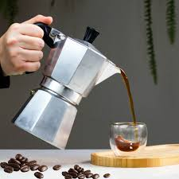
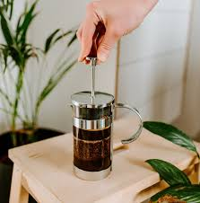
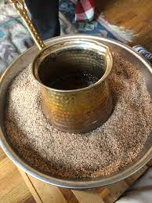
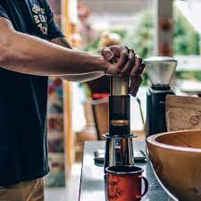

Cafeteira Italiana
Também conhecida como Moca, o seu funcionamento se baseia na passagem de água fervente pressurizada. Na prática, isso significa que a água será aquecida pelo fogão gerando vapor, o vapor aumentará a pressão da cafeteira fazendo com que a água seja expelida para a parte de cima do produto e assim preparando a bebida.

Prensa Francesa
Também chamada de press pot, coffee plunger, cafetiere ou cafetière à piston, entre outros nomes, a cafeteira francesa promove a fusão entre a água e o café moído. O processo é semelhante ao preparo do chá, quando as folhas ficam em contato com a água quente e desprendem ali as propriedades da planta.

Café Turco
O café turco se caracteriza por ser uma bebida espessa, resultado da infusão de grãos moídos a nível extra-fino – é chamado café pulverizado. A grande diferença desse método para os demais é que a água é fervida com o café, que, por sua vez, não é filtrado.

AeroPress
Pelas palavras do criador Alan Adler, a AeroPress foi desenvolvida para extrair um café de pequena quantidade, do jeito mais prático e rápido possível, resultando em uma bebida encorpada e forte como um espresso